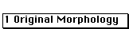

This dialog box allows the morphology of a crystal to be specified. The
crystal morphology consists of a set of plane faces and their distance from
the origin specified as number of planes. For example, a value of 3 would
indicate that the face of the crystal is three planes of the specified type
away from the origin. The definition of the crystal origin is somewhat circular
and is dependent on the defined crystal morphology. Given the definition
of the crystal morphology, the origin is defined as the point in space where
the 001 g-vector, the 010 g-vector, and the 100 g-vector coincide as their
lengths approach zero.
Crystal morphology has limited use in Desktop Microscopist. It is used to
show the rotation of the crystal in real lattice, a Real Lattice plot of
the crystal shape can also be created and it is used for the determination
of streaking in the diffraction pattern calculations.
In addition to defining a crystal morphology, the Crystal Face Dialog Box
(Crystal Face Library) will also plot a representation of the crystal and
allow limited rotation to aid in viewing the morphology. Finally, the Dialog
box supports both the storage and retrieval of crystal morphologies to a
crystal shape library.
and These buttons are used to
add and subtract crystal faces. The Add button adds a duplicate of the last
crystal face in the crystal face list whereas the Delete button deletes
the highlighted or active crystal face. .i.Crystal Shape:Dialog:Add;.i.Crystal
Shape:Dialog:Delete;
This is the Crystal Shape Library Pop-up Menu. It allows
the selection of stored crystal shapes. Desktop Microscopist comes with
the following standard crystal morphologies: Cubic (parallel piped), Octahedron,
Rhombic, Dodecahedron, Tetrahedron, Cuboctahedron and Tetrakaidecahedron.
Selecting a library entry will bring up the stored set of crystal faces
and replaces the current list of plane faces. The number of planes for each
face is given the default value. .i.Crystal Shape:Dialog:Morphology Menu;
II. The Calc. .i.Wigner-Seitz; Cell menu item will attempt to calculate
the Wigner-Seitz Cell for the reduced unit cell. The Wigner-Seitz cell is
generated by drawing directions from the origin to the closest lattice points
and then drawing the perpendicular bisecting plane..i.Crystal Shape:Dialog:
Morphology Menu:Calc. Wigner-Seitz Cell;
This button uses the hkl values in the current editable
text box and makes a list of the complete set of permuted planes. The size
of the total permutation set is dependent on the crystal family and specific
hkl value. Typically, it may be used as a simple method to insert a desired
set of crystal planes. The number of crystal planes will be the same as
the permuted crystal plane..i.Crystal Shape:Dialog:Permutate;
May be used after defining a new crystal morphology
to obtain a plot of the newly defined morphology..i.Crystal Shape:Dialog
:Redraw;
Use the four Rotate buttons to see the morphology from
different views. The rotate buttons support rotation about two axes. The
first axis is out of the plane of the screen both clockwise and counter
clockwise and the second axis is parallel to the screen and horizontal to
the bottom of the screen..i.Crystal Shape:Dialog:Rotate;
This final button will allow the currently defined crystal
morphology to be added to the library of crystal shapes. Click on the Add
To Library button and a small dialog box will appear which will allow
the labeling of the new crystal shape. The crystal shape library is stored
as a resource file and is kept within Desktop Microscopist..i